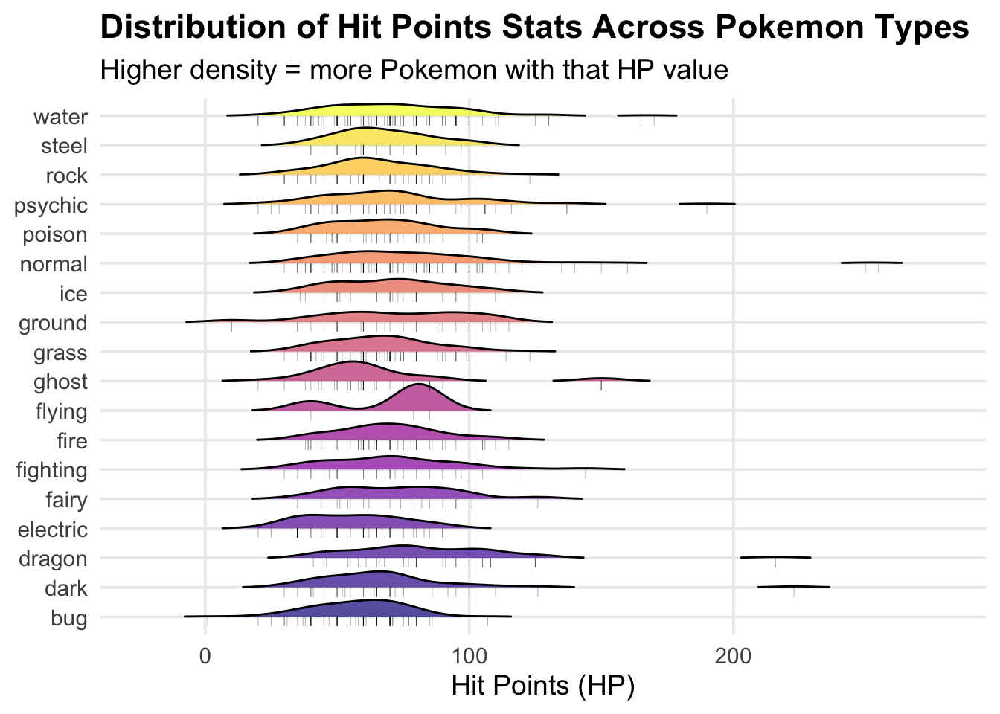
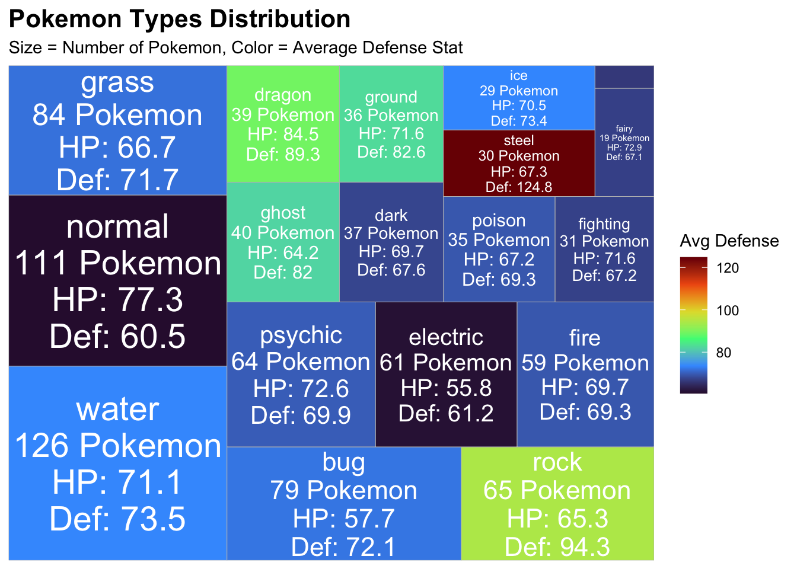
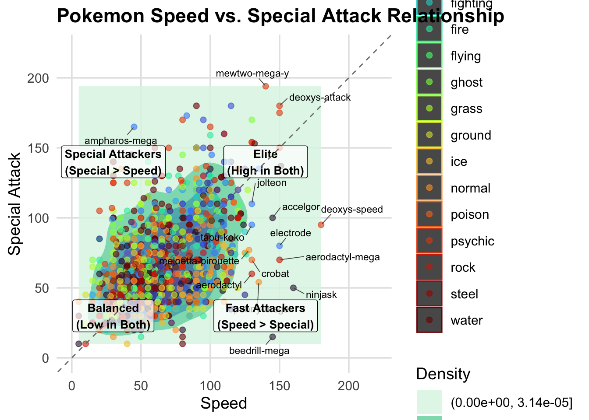
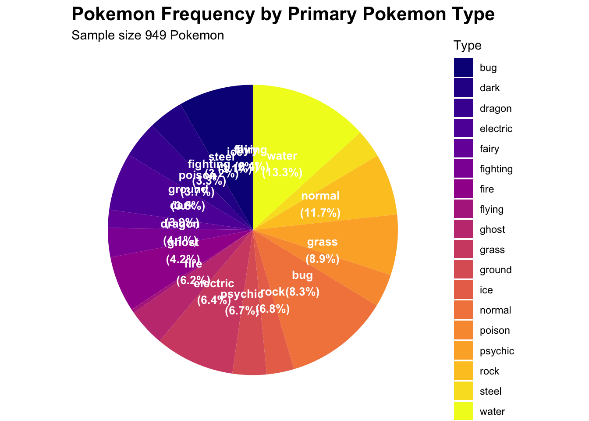

# Option 2: Read directly from GitHub
# Load required libraries for each of the graphs (treemap, pie chart, 2d density, ridgeline)
library(tidyverse)## ── Attaching core tidyverse packages ──────────────────────── tidyverse 2.0.0 ──
## ✔ dplyr 1.1.4 ✔ readr 2.1.5
## ✔ forcats 1.0.0 ✔ stringr 1.5.1
## ✔ ggplot2 3.5.2 ✔ tibble 3.2.1
## ✔ lubridate 1.9.4 ✔ tidyr 1.3.1
## ✔ purrr 1.0.2
## ── Conflicts ────────────────────────────────────────── tidyverse_conflicts() ──
## ✖ dplyr::filter() masks stats::filter()
## ✖ dplyr::lag() masks stats::lag()
## ℹ Use the conflicted package (<http://conflicted.r-lib.org/>) to force all conflicts to become errorslibrary(ggridges)
library(treemap)
library(treemapify)
library(viridis)## Loading required package: viridisLitelibrary(hrbrthemes)
library(ggrepel)
library(scales)##
## Attaching package: 'scales'
##
## The following object is masked from 'package:viridis':
##
## viridis_pal
##
## The following object is masked from 'package:purrr':
##
## discard
##
## The following object is masked from 'package:readr':
##
## col_factor# I am picking the pokemon dataset
pokemon_df <- readr::read_csv('https://raw.githubusercontent.com/rfordatascience/tidytuesday/main/data/2025/2025-04-01/pokemon_df.csv')## Rows: 949 Columns: 22
## ── Column specification ────────────────────────────────────────────────────────
## Delimiter: ","
## chr (10): pokemon, type_1, type_2, color_1, color_2, color_f, egg_group_1, e...
## dbl (12): id, species_id, height, weight, base_experience, hp, attack, defen...
##
## ℹ Use `spec()` to retrieve the full column specification for this data.
## ℹ Specify the column types or set `show_col_types = FALSE` to quiet this message.# I really only need the first 19 columns so I am selecting them
pokemon_data <- pokemon_df %>%
select(1:19)
# I want to clean the data to remove the NAs
pokemon_clean <- pokemon_data %>%
mutate(across(where(is.character), ~na_if(., ""))) %>%
filter(!is.na(type_1), !is.na(hp), !is.na(attack), !is.na(defense))pokemon_ridgeline <- ggplot(pokemon_clean,
aes(x = hp,
y = type_1,
fill = type_1)) +
# Code for creating the ridgeline plot
geom_density_ridges(
alpha = 0.7,
scale = 0.9,
rel_min_height = 0.01) +
# Add jittered points
geom_point(
aes(y = as.numeric(factor(type_1)) - 0.15),
alpha = 0.3,
size = 1.5,
shape = "|") +
scale_fill_viridis_d(option = "plasma") + # could also do mako, rocket, turbo
labs(
title = "Distribution of Hit Points Stats Across Pokemon Types",
subtitle = "Higher density = more Pokemon with that HP value",
x = "Hit Points (HP)",
y = NULL,
fill = "Type") +
theme_minimal(base_size = 14) +
theme(
legend.position = "none",
plot.title = element_text(face = "bold"),
panel.grid.minor = element_blank())
print(pokemon_ridgeline)## Picking joint bandwidth of 8.48
# Save the plot as a manuscript quality pdf
ggsave("pokemon_ridgeline.pdf", pokemon_ridgeline, width = 12, height = 8, dpi = 300)## Picking joint bandwidth of 8.48treemap_data <- pokemon_clean %>%
group_by(type_1) %>%
summarize(
count = n(),
avg_hp = mean(hp, na.rm = TRUE),
avg_attack = mean(attack, na.rm = TRUE),
avg_defense = mean(defense, na.rm = TRUE),
avg_speed = mean(speed, na.rm = TRUE),
.groups = "drop") %>%
arrange(desc(count))
# Create the tree map in ggplot!
treemap_pokemon <- ggplot(
treemap_data,
aes(
area = count,
fill = avg_defense,
# this allows me to add labels to each of the blocks in the tree map for easier interpretation
label = paste0(type_1, "\n", count, " Pokemon\n",
"HP: ", round(avg_hp, 1),
"\nDef: ", round(avg_defense, 1)))) +
geom_treemap() +
geom_treemap_text(
colour = "white",
place = "centre",
size = 11,
grow = TRUE) +
scale_fill_viridis_c(option = "turbo") +
labs(
title = "Pokemon Types Distribution",
subtitle = "Size = Number of Pokemon, Color = Average Defense Stat",
fill = "Avg Defense"
) +
theme_minimal() +
theme(
plot.title = element_text(face = "bold", size = 16),
legend.position = "right"
)
# it looks like steel pokemon have the best defense- makes sense!N Normal pokemon have the least amount of defense.
print(treemap_pokemon)
# Save the plot as a manuscript quality pdf
ggsave("treemap_pokemon.jpg", treemap_pokemon, width = 12, height = 10, dpi = 300)# first we need outliers for labeling purposes
outliers <- pokemon_clean %>%
filter(
# Fast pokemon
speed > quantile(speed, 0.975, na.rm = TRUE) |
# high special attack pokemon
special_attack > quantile(special_attack, 0.975, na.rm = TRUE) |
# Balanced pokemon
(speed > quantile(speed, 0.9, na.rm = TRUE) &
special_attack > quantile(special_attack, 0.9, na.rm = TRUE))
)
# Now we can create the density plot
density_pokemon <- ggplot(
pokemon_clean,
aes(x = speed, y = special_attack)) +
# Create the 2D density plot
geom_density_2d_filled(alpha = 0.85, bins = 7) +
# Add points with colors based on type
geom_point(aes(color = type_1), size = 2, alpha = 0.6) +
# Highlight notable outlier Pokemon
geom_text_repel(
data = outliers,
aes(label = pokemon),
size = 3,
max.overlaps = 8,
box.padding = 0.5,
segment.color = "gray30",
segment.size = 0.3) +
# Custom aesthetics
scale_fill_viridis_d(option = "mako", direction = -1) +
scale_color_viridis_d(option = "turbo") +
# Use more descriptive labels
labs(
title = "Pokemon Speed vs. Special Attack Relationship",
x = "Speed",
y = "Special Attack",
fill = "Density",
color = "Pokemon Type") +
# I like the minimalistic theme for publicaitons
theme_minimal(base_size = 14) +
theme(
plot.title = element_text(face = "bold"),
legend.position = "right",
panel.grid.minor = element_blank(),
panel.grid.major = element_line(color = "gray90"),
legend.key.size = unit(0.8, "cm")) +
# Add quadrant labels
annotate(
"label",
x = 140,
y = 30,
label = "Fast Attackers\n(Speed > Special)",
fontface = "bold",
size = 3.5,
alpha = 0.7,
color = "black") +
annotate(
"label",
x = 30,
y = 140,
label = "Special Attackers\n(Special > Speed)",
fontface = "bold",
size = 3.5,
alpha = 0.7,
color = "black") +
annotate(
"label",
x = 140,
y = 140,
label = "Elite\n(High in Both)",
fontface = "bold",
size = 3.5,
alpha = 0.7,
color = "black") +
annotate(
"label",
x = 30,
y = 30,
label = "Balanced\n(Low in Both)",
fontface = "bold",
size = 3.5,
alpha = 0.7,
color = "black") +
# Add a diagonal line
geom_abline(
intercept = 0,
slope = 1,
linetype = "dashed",
color = "gray50") +
# Set equal axis limits for better comparison
coord_cartesian(
xlim = c(0, 220),
ylim = c(0, 220))
# Display the plot
print(density_pokemon)## Warning: ggrepel: 31 unlabeled data points (too many overlaps). Consider
## increasing max.overlaps
# Save the plot as a manuscript quality pdf
ggsave("density_pokemon.pdf", density_pokemon, width = 12, height = 10, dpi = 300)## Warning: ggrepel: 16 unlabeled data points (too many overlaps). Consider
## increasing max.overlaps# First we need to create a frequency for each of the types so we can put it on a pie chart
type_counts <- pokemon_clean %>%
count(type_1) %>%
arrange(desc(n)) %>%
# Calculate percentages
mutate(percentage = n / sum(n) * 100,
# Create labels with percentages
label = paste0(type_1, "\n(", round(percentage, 1), "%)"),
# Add positions for pie chart labels
position = cumsum(percentage) - 0.5 * percentage)
# Now we can make the pie chart
pie_pokemon <- ggplot(type_counts, aes(x = "", y = percentage, fill = type_1)) +
# Create pie chart
geom_bar(stat = "identity", width = 1) +
coord_polar("y", start = 0) +
geom_text(
aes(y = position, label = label),
color = "white",
fontface = "bold",
size = 3.5) +
scale_fill_viridis_d(option = "plasma") +
labs(
title = "Pokemon Frequency by Primary Pokemon Type",
subtitle = paste0("Sample size ", nrow(pokemon_clean), " Pokemon"),
fill = "Type") +
theme_minimal() +
theme(
axis.text = element_blank(),
axis.title = element_blank(),
panel.grid = element_blank(),
plot.title = element_text(face = "bold", size = 16),
legend.position = "right")
# it looks like that the types are pretty evenly distributed for all of the 949 pokemon
print(pie_pokemon)
# Save the plot as a manuscript quality pdf
ggsave("pie_pokemon.pdf", pie_pokemon, width = 12, height = 10, dpi = 300)